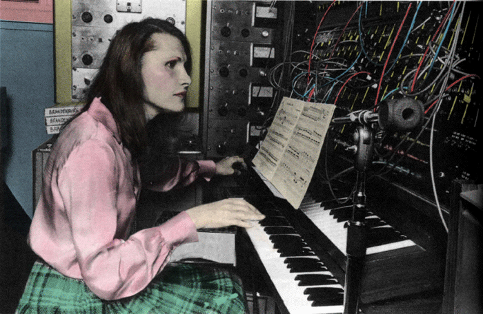

Wendy Carlos is shown in her home studio in 1988. Ebet Roberts/Getty Images
Facts About Wendy
- Wendy was born November, 14, 1939 and raised in Rhode Island.
- Wendy studied physics and music at Brown University and music composition at Columbia University in 1962.
- She helped in the development of the Moog synthesizer which was Robert Moog's first commercially availible keyboard instrument.
- She won 3 Grammy awards for her contributions to music with Switched-On Bach(1968), a Johann Sebastian Bach album preformed entirely on the Moog.
- She composed scores for Stanley Kubrick on A Clockwork Orange(1971) and The Shining(1980) alongside composing for Walt Disney Productions on Tron(1982).
- She was one of the first women to talk publicly about her transgender experience in 1979, by disclosing she had been living as a women since 1968 and undergone gender affirming surgery in 1972.
- She is quite a reclusive artist, with much of her discography being out of print since 2020 and none being availible for digital distribution or up on streaming platforms.